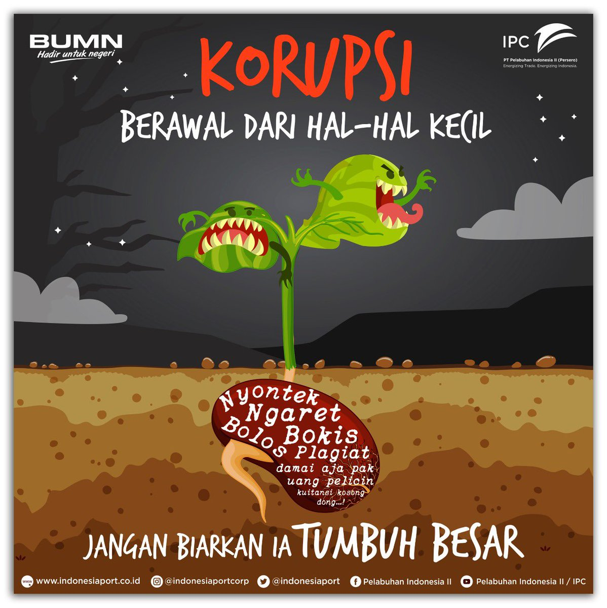

Berawal dari sesuatu yang kecil
“Korupsi”, Kata itu sudah tak asing lagi ditelinga kita ,kita sadari bahwasannya dalam negeri ini banyak sekali para pejabat - pejabat atau pemerintah yang melakukan korupsi. Hingga dalam pertelevisian penuh dengan wajah wajah sang koruptor.
Penyebab korupsi yang saya kutip dari Detik.com:
1. Faktor Politik
Politik adalah salah satu penyebab terjadinya korupsi. Hal ini dilihat ketika terjadi instabilitas politik, kepentingan politis para pemegang kekuasaan, bagkan ketika meraih dan mempertahankan kekuasaan. Perilaku korup faktor ini seperti penyuapan dan politik uang.
2. Faktor Hukum
Faktor hukum bisa dilihat dari aspek undang-undang dan sisi lain lemahnya penegakan hukum. Tidak baiknya substansi hukum, mudah ditemukan dalam aturan-aturan yang diskriminatif dan tidak adil, rumusan yang tidak jelas dan tegas sehingga multi tafsir, kontradiksi, dan overlappingdengan peraturan lain.
3. Faktor Ekonomi
Salah satu penyebab korupsi yakni terjadinya korupsi. Hal ini karena pendapatan atau gaji yang tidak mencukupi kebutuhan.
4. Faktor Organisasi
Organisasi yang menjadi korban korupsi biasanya memberi andil terjadinya korupsi karena membuka pelungan atau kesempatan untuk terjadinya korupsi. Apabila organisasi tidak membuka peluang sedikitpun bagi seseorang untuk melakukan korupsi, maka korupsi tidak akan terjadi.

Sebelum lebih lanjut kita bahas singkat apa itu korupsi
Dikutip dari Say No to Korupsi (2012) karya Juni Sjafrien Jahja, kata korupsi dari bahasa Latin corruptio atau corruptus yang berasal dari bahasa Latin yang lebih tua corrumpere.
Istilah korupsi dalam bahasa Inggris corruption dan corrupt, dalam bahasa Perancis corruption dan dalam bahasa Belanda corruptie yang menjadi kata korupsi dalam bahasa Indonesia.
Dalam Kamus Besar Bahasa Indonesia (KBBI) dijelaskan tentang pengertian istilah korup (kata sifat) dan korupsi (kata benda). Korup adalah buruk, rusak, busuk. Arti lain korup adalah suka memakai barang (uang) yang dipercayakan kepadanya; dapat disogok (memakai kekuasannya untuk kepentingan pribadi). Mengkorup adalah merusak, menyelewengkan (menggelapkan) barang (uang) milik perusahaan (negara) tempat kerjanya. Korupsi adalah penyelewengan atau penyalahgunaan uang negara (perusahaan dan sebagainya) untuk keuntungan pribadi atau orang lain. Mengkorupsi adalah menyelewengkan atau menggelapkan (uang dan sebagainya).
Akan tetapi sadar gak kalian bahwasannya korupsi itu bukan hanya menyanggkup hal besar seperti penyalagunaan uang negara yang mana hal iitu jala merugikan negara kita? Korupsi terkadang sering kita temukan dalam hal- hal kecil yang mana itu menurut kita adalah hal yang wajar dan biasa kita lakukan dalam kehidupan aehari – hari. Ya…hal itu memang jarang kita sadari karena hal kecil itu udah menjadi sebuah kebiasaan sehingga ketika kita melakukannya biasa saja tidak ada rasa was-was sama sekali .
Ingin tau apa aja korupsi yang tak disadari ? berikut ini korupsi yang ternyata ada dalam kehidupan sehari-hari
Korupsi uang Orang tua
Hal ini sering terjadi ketika seoarang anak membutuhkan uang akan tetapi dibutuhkan untuk memenuhi keinginannya bukan untuk kebutuhannya. Misalnya ketika kita meminta uang pada orang tua dengan alasan untuk keperluan sekolah seperti fotocopy, perlengkapan sekolah dll,padahal sebenarnya bukan untuk itu akan tetapi untuk membeli apa yang diinginkan oleh anak yaitu seperti baju,alat make up,kerudung (bagi perempuan ),rokok,bensin,ngopi ( untuk laki-laki) dll. Hal tersebut termasuk korupsi juga loh ,jadi jangan dibiasakan ya . itu akan berdampak jelek
Korupsi Penilangan
Tidak bisa kita pungkiri ,ketika kita terkena tilang oleh polisi kita lebih memilih uang dari pada mengurusi hingga kepengadilan . mereka lebih memilih uang damai dari pada penggadilan
Ternyata korupsi bukan hanya berupa uang ada yang berupa brang dan berupa waktu. Berikut ini korupsi yang berupa benda dan waktu
Korupsi benda teman atau kelas
Hal ini sering terjadi ketika dikelas .ketika kita meminjam barang teman dan berkata akan mengembaliknnya nanti ,tapi apa yang terjadi ? Terkadang hingga seminggu lamanya belum kita kembalikan .bukan hanya itu seperti kita memakai barang milik kalas untuk kepentingan pribadi
Korupsi Waktu
Hal ini sering sekali terjadi dalam kehidupan kita . dimulai dari kita terlambat sekolah,terlambat makan ,terlambat bejama’ah . semua itu merupakan korupsi waktu yang mana kita tidak melakukan hal tersebut dengan ketentuan yang sudah ada .